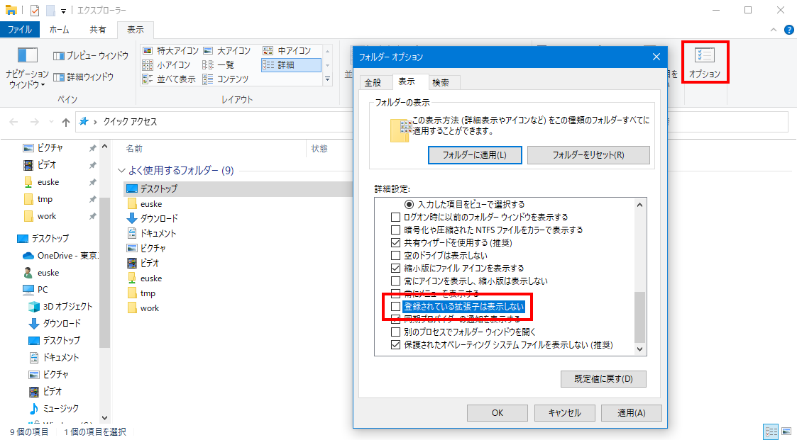

雑談
「えきねっとの自動退会処理」 (詐欺) について。
1. ガイダンス
1.1. 本授業の目的
学術研究とは、調査であった:
- 問題をみつける。
- その問題について調べる。(← 情報リテラシ第一)
- 得られた知識を論文に書く。(← 情報リテラシ第二)
つまり
- 情報リテラシ第一 … 入力
- 調べる方法 (ネットの使い方、セキュリティ、著作権)
- 情報リテラシ第二 … 出力
- 書く方法 (論文、グラフの書き方)
1.2. 本授業でやること
- パソコンを使って学術文書を製作する。
- 最終目標: これとそっくり同じものを作る。
「大規模社会ネットワークからのクラスタ構造の抽出」 - 材料 (文章・実験データ) はあらかじめ与えられる。
- 注意: 「文章の書き方」はやりません。
- 最終目標: これとそっくり同じものを作る。
- 使用アプリ:
- 文書作成:
演習室のLaTeXOverleaf - グラフ描画:
演習室のgnuplotGoogle Colaboratory
- 文書作成:
1.3. 成績評価の方法
- 履修すると: 5点。
- 小課題: 5点×7回 = 35点。
- 中課題: 20点×2回 = 40点。
- プレゼンテーション = 20点。
- 授業中の質問に答えた場合 = プラス3点。 (ただし加点は1度だけ)
- 100点以上の場合は、切り捨てで100点とする。
- 出席しなくても課題さえ提出すれば点数を与える。 (意志が弱い人にはおすすめしない。)
- 締め切りを過ぎた課題は採点しない (0点とする) ので注意。
1.4. Discord
本授業でも、引き続き Discord を使用する。 Discord は情報リテラシ第一と同じものを使う。 2Q から新しく本授業を履修した学生は、T2SCHOLA 内の 「Discordリンク」をクリックして自分の名前を登録せよ。
- 本名でもニックネームでも参加可能。
- 24時間いつでも利用できます。(ただし、夜間・休日は教員の返信はありません。)
- 雑談もOK。
- チャットでの発言が成績に影響することはありません (が、マナーの悪い人は退出してもらいます)。
- 内容の一部は、授業等で公開することがあります。 ご了承ください。
Discord にログインし、「雑談」チャネルで簡単な自己紹介をせよ。 (まだしていない人のみ)
2. 学術研究とは何か?
- 他人にウケるような結論を書く。
- お金が儲かるような結論を書く。
- 真実を書く。
実際には、真実を書くのは (その気があっても) 難しい。 なぜかというと、世の中は複雑で混乱しやすいからである。
2.1. 「真実」の取り扱い
- つまるところ、論文というのは「調査・実験の結果を加工したもの」である。
情報の流れを図示すると、たとえば以下のようになる:
- すべての結果には理由がある:
- なぜこの結果なのか?
→ 元の結果がそうだから (○) - なぜこの結果なのか?
→ 元の結果を見やすく変換・変形したから (○) - なぜこの結果なのか?
→ こっそり手で改竄したから (×、不正な研究)
- なぜこの結果なのか?
2.2. 不正な研究の例 1
- ある時点で結果を不正に改竄したため、それ以降の情報はすべてウソになる:
2.3. 不正な研究の例 2
- 実験データの管理がまずいと、結果の紛失、取り違えが起こる。
この場合も、最終的な論文はウソとなる。
2.4. 本授業で身につけること
- 研究・実験における情報の流れを意識する。
- データの汚染を防ぐための管理技術を学ぶ:
- パソコンにおけるデータの扱い方
- 基本的なデータ処理の技法
研究におけるパソコンの用途
- この授業では「パソコンを使う方法」=
「パソコンを研究に使う方法」に限定する:-
チャット -
動画を見る -
ゲーム - データ管理
- グラフ・文書作成
-
3. コンピュータ上の情報 (復習)
3.1. 情報 (データ) とは何だったか?
- パソコン上で扱う情報は、すべて 0 と 1 の組み合わせで表される:
- 数値
- 文字(列) / テキスト
- 静止画像
- 音声
- 動画
- ...
3.2. データの「形式」とは?
- パソコン (記憶装置) 上のデータは、 すべてファイルに保存される。
- 各ファイルには、ファイル名と拡張子がついている。
- ファイルの中身 … 0 と 1 の羅列。
- 0と1をどのように解釈するかがわからないと、正しく表示できない。 (データの形式)
- パソコンでは、データの形式は拡張子によって区別している:
myfile.txt
ファイル拡張子の例
- テキストファイル:
.txt - HTMLファイル (テキストファイル):
.htmまたは.html - JPEG画像ファイル:
.jpgまたは.jpeg - PNG画像ファイル:
.png - Word文書:
.docまたは.docx - Excel文書:
.xlsまたは.xlsx - PDF文書:
.pdf
- パソコン上で、なんらかの画像ファイルを作成する。
- ファイル名を「
.jpg」などから「.txt」に変換し、 それをメモ帳で開いてみる。 - ファイル名を「
.txt」から「.jpg」に戻し、 ふたたび開いてみる。
ファイル拡張子を表示させる (Windows)
Windowsでは、ファイルの拡張子はふだんは表示されない設定になっている。 これを変更するには、以下のようにする:
- エクスプローラーから フォルダー オプションウィンドウを開く。
- 表示 タブをクリックし、登録されている拡張子は表示しない の
チェックをはずす。

ファイル拡張子を表示させる (Mac)
Macでは、ファイルの拡張子はふだんは表示されない設定になっている。 これを変更するには、以下のようにする:
- Finderをクリックし、メニューから 環境設定... を選ぶ。
- 詳細 タブをクリックし、
すべてのファイル名拡張子を表示 にチェックを入れる。

3.3. 「メタデータ」とは?
- データ (data) … 情報
- メタデータ (metadata) … 情報に関する情報
ほぼすべてのデータには、 メタデータ がついているのが普通である。 パソコンで扱うメタデータには以下のようなものがある:
- ファイル名 (その 0 と 1 の羅列についた名前)
- 拡張子 (データ形式、その 0 と 1 をどのように解釈すべきか)
- ファイルサイズ (データの大きさ)
- 作成日時
- 変更日時
- 作成者, etc.
4. フォルダとは?
- ファイルが多すぎる!
現在のパソコンでは、扱うファイルの数は数万〜数百万にのぼる。 - フォルダ = ファイルを分類するための容れ物。
4.1. フォルダの階層
- フォルダの中に、ファイルまたはフォルダが入る。
- 同一フォルダ内に、同じ名前のファイルまたはフォルダが存在してはならない。
4.2. 実際のファイル・フォルダは何でできているのか?
コンピュータ上の記憶装置 (ディスク) はつねに一定容量であり、 一定個数の「0」または「1」が書き込まれている。 これらの個数は変化しないため、 実際には「空き容量」などというものは存在しない。 また「フォルダ」という実体も存在せず、ファイルの「削除」など というものもありえない。 これらは、すべてソフトウェアによる「見せかけ」である。
5. パス名とは?
- 同じファイル名が異なるフォルダに存在しうる。
- ファイル名だけでは「どこのファイルか」を特定できない。
- ファイルまたはフォルダの位置をパス名 (path name) であらわす:
- Windowsの場合:
C:\フォルダ名1\フォルダ名2\…\ファイル名 - Macの場合:
/フォルダ名1/フォルダ名2/…/ファイル名
- Windowsの場合:
- フォルダ
Xのパス名を書け。 - ファイル
Hのパス名を書け。 - ファイル
Cのパス名を 2つ書け。
- 自分のホームフォルダを開き、パス名を確認せよ。
- デスクトップもフォルダである。パス名を確認せよ。
- 先ほどダウンロードしたファイルがどこにあるか確認し、そのパス名を書け。
- 以下のフォルダを探索し、
その中にあるJPEG画像ファイル (拡張子
.jpg) を発見せよ。 そのパス名を書け。- Windows の場合 … C: ドライブの中の「
Windows」フォルダ - Mac の場合 … Macintosh HD の中の「
ライブラリ」フォルダ
- Windows の場合 … C: ドライブの中の「
5.1. カレント・フォルダ (カレント・ディレクトリ) とは
- パス名を使うことの問題: いくらでも長くなりうる!
/Applications/Safari.app/Contents/MacOS/... - いちいちパス名を入力するのは面倒。簡単にできないか?
→ いま開いている・注目している (カレント, current) フォルダという考えを導入する。
5.2. 絶対パス名と相対パス名
実は「パス名」と呼ばれているものには 2つの種類がある。 上で説明した「パス名」は「絶対パス名」のことであった。
- 絶対パス名: ディスクの先頭からたどったパス名。
- 相対パス名: カレント・フォルダからたどったパス名。
つまり、上のフォルダ X の位置は、次の2通りで表せる:
- 絶対パス名:
/A/E/X - 相対パス名:
./X
5.3. 相対パス名の表し方
- 相対パス名では、カレント・フォルダの位置を
「.(ドット)」で表す:./X,./Kなど - さらに、相対パス名では、ひとつ「上の」フォルダを
「..」で表せる。 - 相対パス名の能力は、絶対パス名と等価である。
つまり、絶対パスで表せるどんな位置も相対パス名によって表すことができる。
例:../../../../../../../Application=/Application
カレント・フォルダが E のとき…
- フォルダ
Aへの相対パス名は? - ファイル
Hへの相対パス名は? - ファイル
Kへの相対パス名は? (2つある)
6. テキストエディタとは?
- テキスト形式のファイル (
.txt) の編集だけをするアプリ。 (だから text editor) - 文字の装飾とかできない。
- プログラム等を書くのに使われる。
- 本授業では:
- Windows の場合 … 「メモ帳」
- Mac の場合 … 「テキストエディット」
- パソコンでテキストエディタを開け。
- 以下のテキスト形式のファイルを作成し、保存せよ。
学籍番号: [あなたの学籍番号] 氏名: [あなたの氏名] 設問: 第1Qで受けた授業のうち、もっともよかった授業を想定し (具体的な講義名は書かなくてよい)、他の授業でも真似してほしい点を挙げよ。 [...質問の答え...]
- ファイルを保存し、
拡張子が
.txtになっていることを確認せよ。 (ファイル名はなんでもよい。)注意: Mac の「テキストエディット」は、ファイルを 「テキスト形式 (
.txt)」ではなく 「リッチテキスト形式 (.rtf)」で保存しようとするので、 保存する前にメニューの フォーマット から 標準テキストにする を実行すること。
7. 本日のまとめ・小課題
- この授業では研究におけるデータ処理の基礎を学習する。
- ファイルの形式は拡張子で表される。
- ファイルの位置はパス名で表される。
- パス名には絶対パス名と相対パス名がある。
- テキストエディタの使い方を学習した。
小課題1. テキストファイルの提出 (6月20日締切)
- 締め切り: 6月20日 (1週間後)
- T2SCHOLA から提出すること。
- 提出締め切りを過ぎたものは採点しない (0点とする) ので注意。
本日の演習 1-8. で作成したテキストファイルを提出せよ。
拡張子は .txt であること。
次週までにやっておいてほしいこと
今後の授業で、以下のサイトを使うため、アカウントを作成しておくこと。
(すでに持っている場合は、何もしなくてよい。)
- Google Colaboratory (Googleアカウント)
- Overleaf
(Googleアカウントを使ってログインすることもできるので、別になくてもよい)
- 締め切り: 6月20日 (1週間後)
- T2SCHOLA から提出すること。
- 提出締め切りを過ぎたものは採点しない (0点とする) ので注意。
本日の演習 1-8. で作成したテキストファイルを提出せよ。
拡張子は .txt であること。
今後の授業で、以下のサイトを使うため、アカウントを作成しておくこと。 (すでに持っている場合は、何もしなくてよい。)
- Google Colaboratory (Googleアカウント)
- Overleaf (Googleアカウントを使ってログインすることもできるので、別になくてもよい)
また、次週からはブレイクアウトルームを使う予定です。